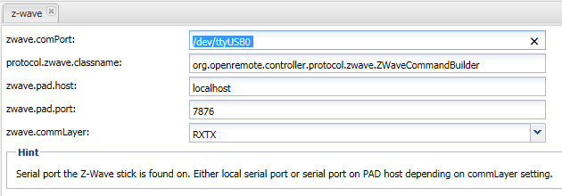
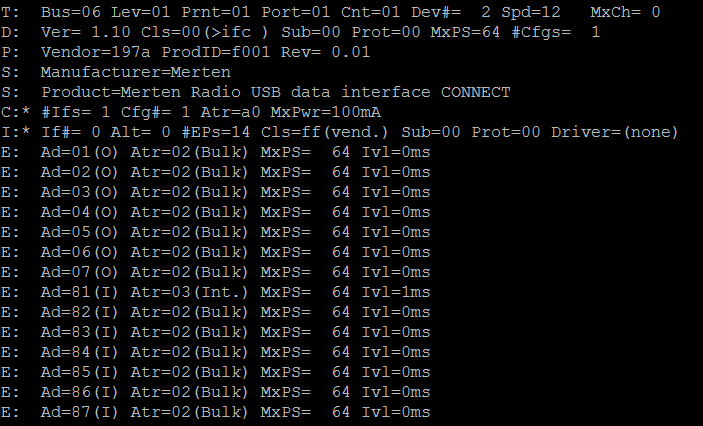
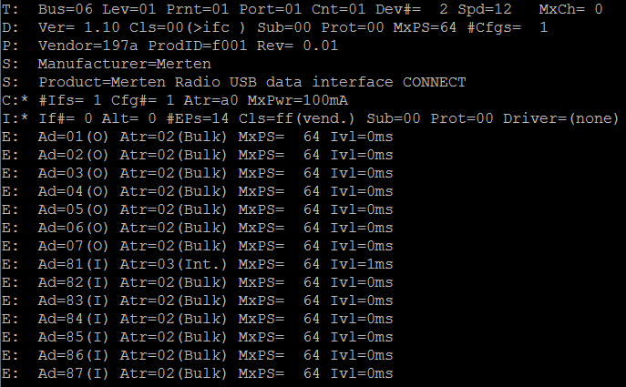
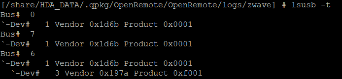

Hi,
I try to run my NAS as a Server for a Z-Wave Network with Merten components. I have followed the instructions so far.
The Merten USB Z-Wave Stick is connected to the nas.
My controller-config looks like this:

I guess that I have not selected the right port. I have changed the file log4j.properties to DEBUG for logging. But the logging file stays empty (I have saved everything and restarted the Software after syncing).
cat /proc/bus/usb/devices
gives the following result:

As you might guess I'm a newbie to OpenRemote and I'm not experienced with Linux. I would be very happy, if you could provide any advice how I could set this up and get it running.
{kind=link}
{kind=link}
{kind=link}
{kind=link}
{kind=link}
{kind=link}
|
Do you use the new Z-Wave implementation : New Z-Wave 2.0.0 Release ? If yes take a look at 'Known Issues' in the link above - you have to create at least one Z-Wave command and a sensor in the OpenRemote Designer, otherwise the Z-Wave network is not scanned. |
|
Hi, I gave it another try today. I am running java version java version "1.8.0_06" I have installed the zwave.jar in the 2.0 version : And Q-Nap says the following: I have plugged the merten z-wave usb stick to the q-nap and I find the following in the proc folder:  I have no idea which of the devices it is in my dev folder so i decided to go with /dev/ttyUSB01 but this might be wrong! I have googled and found the lsusb -t command which listed the following:  I assume that the merten usb stick is connect to BUS#6 but that does not help me. |
|
Hi, you can run dmesg command, you will find something like: [~] # dmesg Regards, |
|
Hm I've entered it and I have no idea what I'm seeing here [ 159.141444] warning: `proftpd' uses 32-bit capabilities (legacy support in use) |
|
I am myself as well struggling getting openremote to work with the zwave stick on a QNAP 459 Pro, so far no luck. But I have no problem to see on which USB port it gets connected, did you try to stop openremote, unplug the stick, replug, check dmesg and then start openremote. Also note that you should leave the PAD (host + port) fields empty in the designer as RXTX is used instead (read it somewhere in installation guide). |
|
I:* If#= 0 Alt= 0 #EPs=14 Cls-ff(vend.) Sub-00 Prot=00 Driver=(none) Not driver for The Merten USB Z-Wave Stick. |